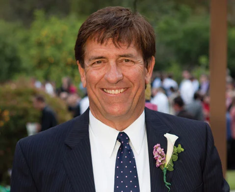

About OxtonStaabGans
Charles M. Oxton, Georgia L. Staab, and Eric B. Gans seek to combine the flexibility and client-centered approach to practicing law that only sole practitioners can offer, with the collective wisdom, skill, and capability of a team. With separate and independent law practices, each attorney is available to clients on an individual basis. However, the attorneys and staff operate in a close collaborative setting, sharing a unified office structure and a consultative “team” approach to resolving difficult legal issues in a responsible and confidential manner.
What started more than twenty years ago as a collaboration between Charles M. Oxton and W. Carl Gans lives on today. With Georgia L. Staab opening her practice in the Granada a decade ago, followed more recently by Eric B. Gans, OxtonStaabGans Attorneys represents a two-decade history of delivering exceptional results for clients.
W. Carl Gans
In Memorium 1949-2011 
W. Carl Gans, a prominent Santa Barbara attorney, mediator, and our dear friend, passed away on August 2, 2011.
Carl earned his BS and MS degrees in mechanical engineering and began his career at Delco Electronics in Goleta, where he worked for 20 years. As he reached his mid thirties, however, he discovered he had a gift for helping people resolve their differences. True to form, despite the demands of working full-time and raising four rambunctious children with his wife Debi, Carl decided to earn his law degree. He attended night classes at the Santa Barbara College of Law, earned his JD and admission to the bar in 1989, and never looked back.
For the next 22 years of his life, Carl developed a family law and mediation-focused practice in Santa Barbara in close quarters with his great friends Chip Oxton and Georgia Staab, and their loving and loyal staff. For the rest of his life, his professional relationships with his partners, staff, colleagues, and clients would inspire profound happiness in Carl, and a wonderful sense of accomplishment, prompting frequent declarations that he would never completely retire.
With close friends and family always near, Carl spent the last years of his life in a glow of personal and professional contentment: working, traveling the world, playing golf, gardening, tending to his chickens, and attending church. A loving husband, father, grandfather, son, and brother, Carl is survived by Debi and their four children (and spouses), Lisl (Rhodri), Heidi (fiancé John), Will (Rebecca), and Eric (Kristin); two grandchildren (Rhiannon and Tryfan); his mother, Bucky; his sister, Judy, and brother, Phil; and an enormous community of extended family, dear friends, and respected colleagues and clients. He is sorely missed.